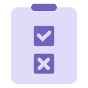

LG Energy Solution poszukuje osób zorientowanych na osiągnięcia,
które potrafią się rozwijać, podejmować wyzwania, realizować zadania i współpracować,
aby dzięki naszej technologii uwolnić potencjał świata.
Wizja talentu
Działamy wspólnie zorientowani na rozwój, wyzwania, osiągnięcia i współpracę, aby przy pomocy technologii LG Energy Solution obudzić ukrytą moc świata.
-

Strategia biznesowa
- Opracowywanie strategii biznesowych poprzez monitorowanie otoczenia biznesowego
- Przegląd kluczowych zagadnień w działalności w celu zaproponowania wniosków i rozwiązań
- Strategie przyszłości i tworzenie New Biz. Plan, strategiczne wsparcie inwestycji itp.
-

Innowacje w zarządzaniu
- Promowanie działań innowacyjnych w celu zwiększenia wartości z perspektywy klienta
- Tworzenie wyników biznesowych poprzez identyfikację i realizację projektów innowacyjnych
-

Rozwój biznesu
- Rozwój i realizacja znaczących możliwości biznesowych w oparciu o analizę i prognozy otoczenia biznesowego
- Poszukiwanie i identyfikacja nowych możliwości w celu rozwoju nowych obszarów działalności
-

Księgowość/Finanse/IR
- Poprawa stabilności finansowej przedsiębiorstwa, np. rozliczenia finansowe, zarządzanie strukturą finansową i opodatkowanie
- Przeprowadzanie wstępnych ocen ryzyka i analiz wykonalności inwestycji dla stabilnego zarządzania
- Ułatwianie komunikacji wewnętrznej i zewnętrznej w celu wspierania podejmowania trafnych decyzji przez kierownictwo
-

Strategia i planowanie zakupów
- Opracowanie średnio- i długoterminowych strategii zakupowych oraz systemów pracy zgodnych z celami korporacyjnymi
- Zapewnienie stabilnych i konkurencyjnych zdolności zakupowych
-

Zakupystrategiczne i zarządzanie
- Zakupy surowców i komponentów do produkcji masowej
- Źródła pozyskania i zakupy surowców
- Zakupy sprzętu i inwestycji budowlanych
-

Zakupy i zarządzanie rozwojowe
- Zakupy surowców i komponentów na potrzeby rozwoju
-

SCM (Łańcuch dostaw/logistyka)
- Ustalanie globalnych celów dostaw SCP, opracowanie i doskonalenie średnio-/długoterminowych planów zarządzania mocami produkcyjnymi
- Identyfikacja/rozwiązywanie/zarządzanie ryzykiem w zakresie produkcji, jakości, zakupów i materiałów
- Planowanie logistyki i jej optymalizacja
-

BHP
- Poprawa jakości powietrza/wody/problemów środowiskowych związanych energią, zapobieganie wypadkom bezpieczeństwa i czynnikom ryzyka Ustanowienie/eksploatacja systemu reagowania kryzysowego itp.
- Odpowiedź na przepisy dotyczące ochrony środowiska produktu, ustanowienie/działanie systemu zarządzania oraz wzmocnienie kompetencji produktu przyjaznego dla środowiska
- Ustanowienie/działanie powiązanego standardowego systemu zapobiegania chorobom zawodowym i przestrzegania przepisów dotyczących zdrowia
-

Wsparcie biznesu (GA)
- Obsługa udogodnień i usług pracowniczych, tworzenie i zarządzanie środowiskiem biurowym oraz nadzór nad obiektami i wyposażeniem
- Zarządzanie aktywami nieruchomościowymi (zakup, sprzedaż, wynajem itp.), wspieranie działalności biznesowej (zapewnianie lokalizacji i przestrzeni dla nowych podmiotów) oraz zarządzanie wolnymi przestrzeniami w całej firmie
- Standaryzacja działań administracyjnych we wszystkich lokalizacjach globalnych oraz wsparcie przy zakładaniu i stabilizacji nowych podmiotów
-

HR (HRM)
- Opracowanie strategii HR oraz projektowanie i prowadzenie systemów i struktur organizacyjnych HR
- Monitorowanie opinii pracowników (VOE) w celu identyfikacji i rozwiązywania problemów
- Pozyskiwanie najlepszych talentów zgodnych z profilem organizacyjnym
-

HR (Employee Relations)
- Planowanie kwestii związanych z zarządzaniem pracą, zarządzanie ryzykiem związanym z zarządzaniem pracą, wsparcie dla pracy zarządzania pracą.
-

L&D
- Tworzenie ram rozwoju talentów oraz planowanie, opracowywanie i realizacja programów rozwojowych
-

Zespół ds. kultury korporacyjnej
- Budowanie środowiska pracy opartego na wspólnym systemie wartości, które pozwala członkom skupić się na pracy
-

Bezpieczeństwo informacji
- Ustanowienie strategii/polityki bezpieczeństwa informacji oraz globalnego systemu zarządzania bezpieczeństwem informacji
- Diagnoza bezpieczeństwa i ocena ryzyka dla witryn biznesowych, infrastruktury IT i procesów biznesowych
- Reakcja na cybernaruszenia i wycieki, reagowanie na wymogi zgodności (ochrona danych osobowych, RODO itp.)
-

Innowacje biznesowe
- Przeprojektowanie procesu/ustanowienie systemu w celu optymalnego działania
- Udoskonalanie procesów i wdrażanie optymalnych rozwiązań w celu realizacji celów zarządzania ESG
- Tworzenie i obsługa systemu reagowania infrastruktury IT zapewniającego ciągłość działania biznesu
-

Dział prawny
- Doradztwo w kwestiach prawnych, opiniowanie umów, świadczenie usług prawnych
- Inspekcja i edukacja w zakresie ryzyka braku zgodności, funkcjonowanie sekretariatu Zarządu, tworzenie i funkcjonowanie polityki uczciwego handlu
- Prewencyjne reagowanie na ryzyka prawne związane z prowadzeniem działalności gospodarczej, odszkodowanie (cywilne), rozporządzanie organami administracyjnymi (administracyjne), kwestie karne (karne) itp.
-

Dział audytu
- Tworzenie kultury organizacyjnej opartej na Jeong-Do Management oraz jego promocja/szkolenia
- Dochodzenie w sprawie zgłoszeń o korupcji itp.
- Diagnoza efektywności biznesowej i adekwatności pracy
-

Wsparciepolityk/procedur
- Wspieranie rozwiązań głównych problemów biznesowych poprzez analizę polityk/procedur
- Zmiany klimatyczne/wkład społeczny/wspólne planowanie wzrostu i zarządzanie realizacją
- Strategia ESG i zarządzanie pracą komitetu ESG
-

Reklama/Marketing
- Zwiększanie wartości firmy poprzez rozpowszechnianie filozofii firmy i polityki zarządzania oraz PR
- Ustanowienie strategii zintegrowanej komunikacji marketingowej w całej firmie oraz planowanie/realizowanie działań marketingowych BTL
- Tworzenie strategii marki, reklama i obsługa komunikacji cyfrowej